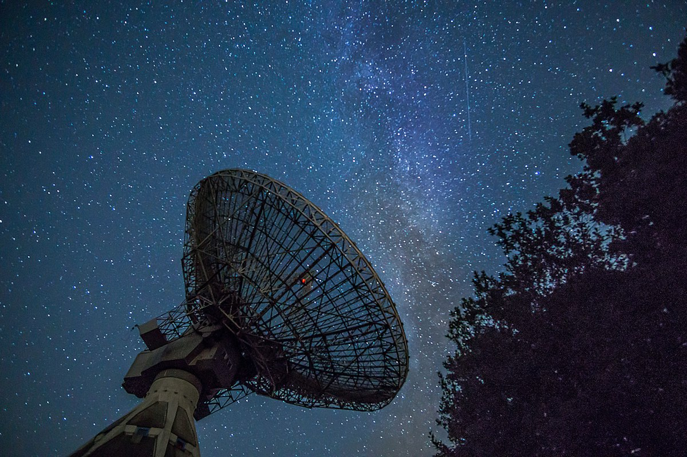

A Candidate Neutron Star Crowds the Mass Gap
One heavy object would test the equation of state that every neutron star obeys, if the mass can be measured properly.

The line that is not a line
The tidy account of stellar death gives a collapsing core two endings. It becomes a neutron star, or it collapses all the way to a black hole. The boundary gets taught as a threshold, and thresholds are easier to remember than the physics behind them. A report dated Nov 13, 2026 describes a candidate sitting close to that line, which makes the line worth re-examining.
The claim I want to defend is narrower than the headline. A record mass tells you about one object. A measured maximum is a constraint, and constraints are what theory has to answer to. Every neutron star tests how far nuclear matter can be compressed before it gives way, so a confirmed mass near the top teaches you something about all of them.
That is why the mass gap is a live problem and not a gap in the catalog. Observers keep finding compact objects on either side of it, and the space between stays thin. Whether it is thin because of how stars die, or because of how we detect what they leave, is not settled.
What sets the maximum
Inside a neutron star, ordinary atomic structure is gone. Nuclei have dissolved into a fluid of neutrons with a sprinkling of protons and electrons, and the whole mass sits inside a radius measured in kilometers. What holds it up is quantum pressure plus the short-range repulsion between neutrons. Push harder and the repulsion pushes back.
The point where support fails has a name, the Tolman-Oppenheimer-Volkoff limit, and its value is not known from first principles. It depends on the equation of state, the rule that says how pressure responds to density far above nuclear density. Different candidate rules give different maxima. The spread between them is the disagreement.
This is where a heavy neutron star does its work. Finding one rules out every equation of state that predicts a maximum below the measured mass. The exclusion rests on the object's existence rather than on argument. That is an efficient kind of evidence. One measurement removes a family of theories at once.
Why the gap is thin
Stars do not collapse to arbitrary masses. A core that survives as a neutron star has been through a supernova, and the explosion carries mass away. The envelope leaves, the remnant settles, and what remains sits inside a band set by stellar evolution rather than by nuclear physics. That clustering is one explanation for the gap.
The other explanation is observational. Light black holes are hard to find with the methods that find heavy ones, and a quiet neutron star with no beam pointed at us is nearly invisible. If the gap were populated, we might not know. Selection effects can leave an apparent gap with no physical cause.
Mergers complicate the picture. Two neutron stars that spiral together can leave a remnant above the ordinary maximum, supported for a while by rotation and by the heat of the collision. The remnant either collapses promptly or survives briefly, and both outcomes put mass where the gap is supposed to be empty. That is the cleanest natural route to a heavy neutron star.
The word likely carries weight
The headline says likely, and that word carries more weight than supermassive. A mass inferred from a model is not a mass weighed on a scale. If the number comes from the dynamics of a companion or from a waveform, each route has failure modes of its own. Each leaves room for a black hole to be miscast.
The strongest objection to my reading is that a candidate proves nothing until it is confirmed. I accept that. The objection also applies to every candidate in astronomy, so the useful version is procedural. Treat the object as a hypothesis with a deadline. A hypothesis without a deadline is a belief.
A subtler version cuts deeper. The object may not be a neutron star at all but a black hole that formed quietly, with no electromagnetic signature at the moment of collapse. Separating the two at a distance requires a surface or a spin, and neither is guaranteed. That ambiguity is the reason the word likely appears at all.
Spin buys room
A rotating neutron star can hold more mass than a still one. Rotation adds centrifugal support, so the maximum for a spinning object sits above the maximum for a stationary one. A candidate that looks impossible for a quiet neutron star may be ordinary for a fast one. The allowance is built into the physics.
The word likely is not modesty.
If the mass runs high because the object spins fast, the constraint on the equation of state gets weaker. The extra support comes from rotation, not from the stiffness of the matter. The measurement worth having is therefore mass and spin together, which is harder to obtain than mass alone. One number without the other can be fitted to almost anything.
Astronomers writing these papers know this, which is why the language stays careful in ways the headlines do not. The word likely summarizes a probability that depends on several unmeasured quantities at once. The arithmetic is doing the hedging. Popular coverage tends to drop the qualifier, while the paper keeps it.
How you would settle it
Three measurements would turn the object into a constraint. The first is a dynamical mass, taken from the orbit of a companion, which rests on Kepler's laws rather than on a model of the object's surface. The second is a Shapiro delay, the extra travel time light picks up crossing the object's gravity well. In a binary pulsar, that delay tightens the mass considerably.
The third is a spin measurement. If the object pulses, the spin period and its derivative give an independent handle on the system. Mass and spin together can then be checked against the family of equations of state. None of these is quick. Timing campaigns run for years, and the answers arrive on their own schedule.
A gravitational-wave detection of a merger that leaves a remnant in the gap would be the strongest evidence available, because the waveform carries the masses directly. That route depends on a detector listening at the right moment, which comes down to duty cycle and timing. The data exist or they do not. Waiting is part of the method.
What the object changes anyway
Consider what the report does even if the mass shifts by a margin once better data arrive. It puts a number with an uncertainty into a region of the mass function that has been mostly empty. Future work now has to argue with that number. A published figure gets cited and tested; an empty region of a plot does not.
The alternative outcome is smaller and still useful. If the object is a black hole and the gap stays empty, the result maps where the boundary is not. That constrains the equation of state from the other side. The negative result has value here. The trade is the same, and the arithmetic does not care which way it resolves.
So read the next paper for the mass and the method, in that order. Check whether the mass is dynamical or fitted, whether a spin is reported alongside it, and whether the upper uncertainty excludes a quiet black hole. Those three questions decide whether the gap narrowed or only appeared to. Until they are answered, the maximum stays where the models left it.